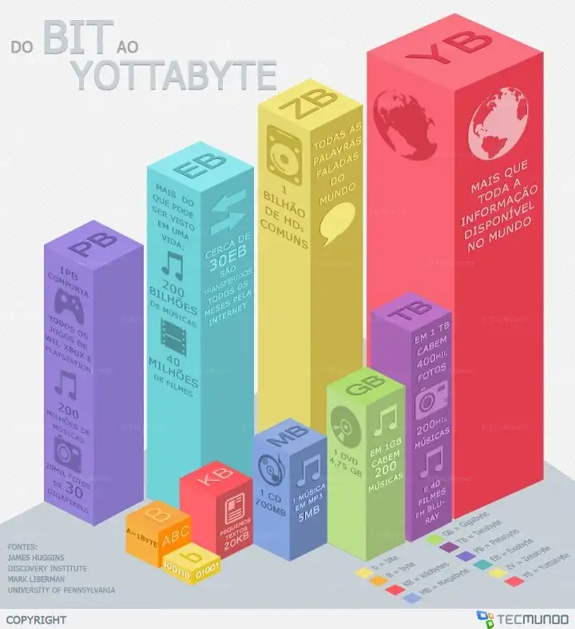

Estatísticos e Cientistas de Dados:
Quem são, o que fazem e onde atuam?
Departamento de Estatística | UFPE
Motivação
Solução de Inteligência Artificial para tradução simultânea de voz em tempo real, que utiliza análises estatísticas para conseguir análisar e interpretar o áudio.
Cenário Atual - Mundo
Atualmente, existem aproximadamente 50 bilhões de dispositivos conectados à internet;
7.4 bilhões de pessoas vivendo em nosso planeta.
Essas conexões entre pessoas e dispositivos geram uma massa de dados estimada em 5 zettabytes.
Para se ter uma ideia do que isso significa, vamos entender rapidamente a estrutura de armazenamento de dados com exemplos que temos no cotidiano.
Cenário Atual - Mundo

- bit (b)
- byte (B)
- kilobyte (KB)
- megabyte (MB)
- gigabyte (GB)
- terabyte (TB)
- petabyte (PB)
- exabyte (EB)
- zettabyte (ZB)
- ‘yottabyte’ (YB)
Este último, equivale a ’todas as centrais
de dados, discos rígidos, pendrives e servidores de todo o mundo’.
Cenário Brasil - 2022
No Brasil, aproximadamente, 71% da população brasileira está acessando a internet e 66% estão nas mídias sociais, como blogs, Facebook, X (oantigo Twitter), Instagram, SlideShare, Youtube, entre outros, realizando algum tipo de interação e assim trocando dados e informações.

Uso digital no Brasil. Fonte: We are social.
Estatístico
O ESTATÍSTICO é um profissional que pode transformar pilhas de números, textos, áudios, vídeos em gráficos e informações que servirão para uma tomada de decisão, visando, por exemplo, reduzir custos e aumentar lucros.
Atuais áreas existentes
Atualmente no mercado de trabalho, empresas criadas com a cultura data driven (orientada a dados) ou empresas que estão em processo de transformação digital, estão usando diferentes nomenclaturas para os profissionais que trabalham com dados. As mais frequentes atualmente são:
- Engenheiro de dados: responsável por construir, manter e otimizar a infraestrutura de dados, garantindo que os dados estejam disponíveis, acessíveis e prontos para análise.
- Analista de dados: responsável por coletar, processar e realizar análises estatísticas em conjuntos de dados para extrair insights acionáveis que possam informar decisões de negócios.
- Cientista de Dados: responsável por analisar e interpretar dados, utilizando técnicas de estatística, aprendizado de máquina e programação para desenvolver modelos preditivos e soluções baseadas em dados.
- Engenheiro de Machine Learning: responsável por projetar, construir e implementar modelos de aprendizado de máquina em sistemas de produção, garantindo que esses modelos sejam escaláveis, eficientes e integrados aos processos de negócios.
- Engenheiro de Prompt: responsável por criar, otimizar e gerenciar prompts para modelos de linguagem baseados em inteligência artificial, garantindo que os prompts sejam eficazes na geração de respostas precisas e relevantes para diversas aplicações.
Atuais áreas existentes
Em qual destas áreas o Estatístico pode atuar?
Em todas elas!
Engenheiro de dados;
Analista de dados;
Cientista de Dados;
Engenheiro de Machine Learning;
Engenheiro de Prompt;
Atuais áreas existentes
Em qual destas áreas o Estatístico pode atuar?
Em todas elas!
Engenheiro de dados;
Analista de dados;
Cientista de Dados;
Engenheiro de Machine Learning;
Engenheiro de Prompt;
Entretanto, o Estatístico tem uma afinidade maior com a área de Cientista de Dados, por conta da sua formação sólida em Estatística e Matemática, que são fundamentais para modelagem e interpretação dos dados.
Áreas que podem se beneficiar com a Estatística e Ciência de Dados
Áreas que podem se beneficiar
- Na área da Saúde ou Medicina:
a ciência e a tecnologia caminham juntas há tempos, e nessa área podemos comentar por exemplo sobre os dispositivos e sensores portáteis que conectados ao corpo enviam dados em tempo real sobre as condições de saúde de um paciente, dessa forma é possível extrair diversas análises sobre os dados coletados.
Também podemos comentar sobre os avanços nos diagnósticos de doenças como o câncer, reduzindo o tempo dos exames e extinguindo a chance de erro médico, dessa forma quanto mais rápido o diagnóstico, maiores as chances de cura do paciente.
Áreas que podem se beneficiar
- Na área da Marketing e Varejo:
neste caso podemos utilizar a ciência de dados para personalização da compra, que é uma experiência positiva para o cliente. Através de algoritmos de aprendizado, a máquina estabelece as preferências do público de acordo com histórico de compras e recomendações, assim as tomadas de decisões sobre as ações são mais acertadas e direcionadas para o desejo dos clientes.
Áreas que podem se beneficiar
- Uma outra área bem conhecida na utilização da ciência de dados é com Serviços financeiros:
nesta área as empresas procuram identificar padrões e informações que favoreçam a negociação, também para facilitar a rotina das transações e combater fraudes, seja analisando perfis de risco, ou com tecnologias mais atuais como cibersegurança.
Áreas que podem se beneficiar
- A área da Relacionamento com consumidor:
responder e oferecer serviços a potenciais clientes era 100% humano, hoje existem os chatbots que com determinados algoritmos, aprendem a cada conversa, e se tornam cada vez melhores em se relacionar com os clientes, dessa forma, empresas que oferecem serviços de integração dos chatbots com redes sociais e com sistemas de pagamento já deslumbram um cenário otimista.
Áreas que podem se beneficiar
- A área da Moda
prever tendências de compra, personalizar experiências e o relacionamento com chatbots, são benefícios da ciência de dados com Inteligência Artificial e amplamente aplicados na moda. Além do e-commerce, a analise dados é uma importante aliada no desenvolvimento de novos tecidos, através de simulações e inteligência, as reações humanas são imitadas, com controles sobre a transpiração.
Áreas que podem se beneficiar
- Na área da Educação:
a tecnologia junto com as análises já alterou a forma como os professores ministram as aulas, em alguns locais complementando a utilização de livros por imersões no tema estudado com recursos de realidade virtual por exemplo.
Áreas que podem se beneficiar
Áreas que podem se beneficiar
Mercado de trabalho

- Realizado 14 de outubro de 2024 e 18 de dezembro de 2024 e contou com 5.217 respondentes em todo o Brasil
Link para Estudo:
Mercado de trabalho

Mercado de trabalho

Mercado de trabalho

Mercado de trabalho

Mercado de trabalho

Na Universidade
Curso de Graduação em Estatística - DE/UFPE1
Graduação em Estatística - DE/UFPE
- São 30 vagas no SISU com entrada no primeiro semestre Letivo;
- Duração de 4 anos e funciona no período DIURNO;
- O QUE OS ALUNOS ESTUDAM? …
- é possível destacar alguns pilares fundamentais
Pilares para Estatísticos e Cientista de dados
- Primeiro pilar:
Possuir “Pensamento e raciocínio lógico matemático”, é extremamente necessário ter a capacidade de realizar operações lógicas, ou seja, a capacidade de organizar dados ou informações para se obter um contexto, um significado e um resultado ou consequência
Pilares para Estatísticos e Cientista de dados
- Segundo pilar:
Em seguida, a “Matemática e Estatística” é a base da probabilidade, e dos métodos estatísticos, como também os algoritmos de aprendizado de máquina (machine learning) e inteligência artificial. Os conceitos matemáticos e a estatística é característica intrínseca da ciência de dados.
Pilares para Estatísticos e Cientista de dados
- Terceiro pilar:
Outro ponto importante é o “Conhecimento em Programação”, a extração de dados exige criatividade devido ao emaranhado de dados possíveis para um determinado fim e exige também formas viáveis para extração. Tanto a criatividade quanto a viabilidade são postas em prática a partir de programas oriundos do conhecimento de linguagens de programação.
Dúvidas?

OBRIGADO!
Slide produzido com Linguagem de Programação R e Quarto.
Site do Departamento de Estatística: https://www.ufpe.br/dep-estatistica
Estatísticos e Cientistas de Dados: Quem são, o que fazem e onde atuam? - https://www.ufpe.br/dep-estatistica